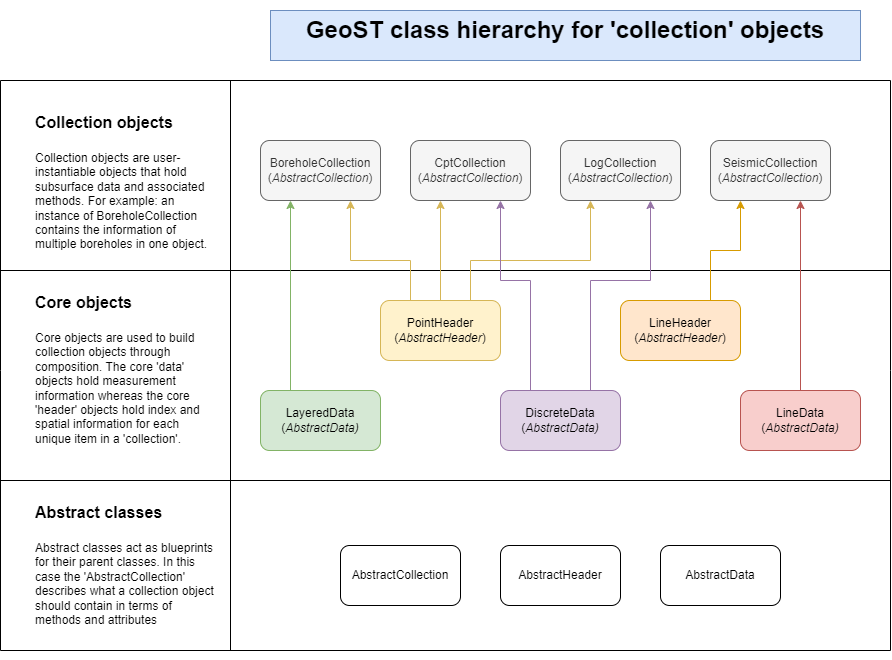
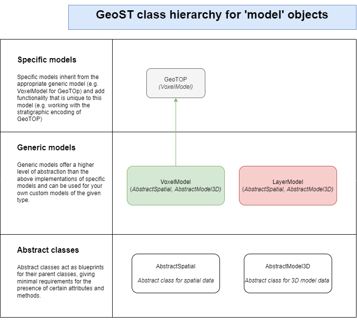

Data structures#
GeoST uses standardized internal data structures and data validation to ensure that the functionality that GeoST offers can always reliably be applied to parsed data. This user guide sections dives deeper into GeoST data structures. For a more basic overview of the concepts, see the Introduction to GeoST.
Point and line data#
To describe point data (e.g. boreholes, well logs, cpts) and line data (e.g. seismics,
GPR, EM) you need a minimal amount of information on the identification and position of each
point/line (Header). For each point/line there are measurements or descriptions available
of the subsurface (Data). The following header and data objects are used to
describe point and line data:
Header objects:
PointHeaderdescribes metadata and spatial information of point surveys.LineHeaderdescribes metadata and spatial information of line surveys.
Data objects:
LayeredDatadescribes subsurface data in layers defined by tops and bottoms.DiscreteDatadescribes subsurface data discretized by depth.LineData NOTE: Not yet implemented
These basic objects are used to build Collections. E.g. a BoreholeCollection
is built from the combination of a PointHeader
object and a LayeredData objects. The below
figure gives a complete overview of the object hierarchy in GeoST for point and line data.

Collection objects#
Collection objects are composed of an instance of Header and Data. The collection provides additional logic to maintain alignment between header and data. A collection object inherits all methods that are provided both through the child header object and the child data object. For example: you can access spatial selection methods (= header operations) as well as data slicing methods (= data operations) directly from the collection. It is recommended to work with collections by default, unless you specifically need only header or data functionality.
GeoST currently offers the following collection classes:
BoreholeCollection: A collection of borehole data, composed ofPointHeaderandLayeredData.CptCollection: A collection of cone penetration test data, composed ofPointHeaderandDiscreteData.
By default, read functions for point/line data return a collection (see: Reading data).
import geost
# Load the Utrecht Science Park example borehole data
boreholes_collection = geost.data.boreholes_usp()
# boreholes_collection is an instance of BoreholeCollection and contains 67 boreholes
print(boreholes_collection)
BoreholeCollection:
# header = 67
Header objects#
GeoST header objects are built on top of a Geopandas.Geodataframe
to hold data, including point geometries (PointHeader)
or linestring geometries (LineHeader). The Geodataframe
is the attribute named gdf within a header object. Each entry (row in the Geodataframe)
corresponds to one point or line survey, e.g. one borehole or one seismic line. GeoST
header objects offer built-in methods for changing horizontal and vertical reference
systems, selecting data based on spatial conditions, export of table data and export of
geometries for viewing header data in GIS.
A PointHeader requires a bare minimum of data
columns to describe the data and to ensure that all built-in methods can be applied:
Column name |
Validation criteria |
Description |
|---|---|---|
nr |
Must be interpretable as string |
Identification name/number/code of the point survey |
x |
Must be of numeric type (int or float) |
X-coordinate |
y |
Must be of numeric type (int or float) |
Y-coordinate |
surface |
Must be of numeric type (int or float) and higher than end depth |
Surface elevation of the point survey in m |
end |
Must be of numeric type (int or float) and lower than surface elevation |
End depth of the point survey in m |
geometry |
Must be of type |
Point geometry of the survey location |
The header is not limited to just these columns. Any number of columns can be added to give
additional information on surveys. Some built-in analysis methods may even add information
to the header. For instance, the method PointHeader.get_area_labels
has an argument include_in_header which, if set to true, adds a column with results
to the header Geodataframe.
If you’re only interested in survey locations and/or metadata, it is adviced to directly work with the header object to avoid additional overhead caused by a parent collection object (overhead is caused by checks of the header against data after every operation to ensure header/data alignment). Read functions for point and line data (see: Reading data) return a corresponding collection object by default, but you can assign only the header to a variable in order to continue with just the header data. See the example below.
# Load the Utrecht Science Park example borehole data and only assign the header data.
boreholes_header = geost.data.boreholes_usp().header
# Print horizontal and vertical reference system properties and the first few rows of
# the boreholes header data.
print(boreholes_header.horizontal_reference)
print(boreholes_header.vertical_reference)
boreholes_header.gdf.head()
EPSG:28992
EPSG:5709
| nr | x | y | surface | end | geometry | |
|---|---|---|---|---|---|---|
| 0 | B31H0541 | 139585 | 456000 | 1.20 | -9.90 | POINT (139585 456000) |
| 1 | B31H0611 | 139600 | 455060 | 1.20 | -23.00 | POINT (139600 455060) |
| 2 | B31H0718 | 139950 | 455200 | 1.30 | -271.20 | POINT (139950 455200) |
| 3 | B31H0803 | 139675 | 455087 | 2.16 | -4.84 | POINT (139675 455087) |
| 4 | B31H0806 | 139684 | 455384 | 1.00 | -49.50 | POINT (139684 455384) |
Data objects#
GeoST data objects are built on top of a Pandas.DataFrames
to store data. The actual dataframe is named df within a data object. Each entry (row)
in the data represents a single layer (in case of LayeredData)
bounded by a top and a bottom or a single measurement (in case of DiscreteData)
at a certain depth. One point or line survey (i.e. one row in the header) can be associated
with multiple rows of data. E.g. a single borehole with 10 described layers is represented
by one row in the header Geodataframe and ten rows in the data DataFrame. GeoST
data objects offer built-in methods for conditional selections, slicing, basic
analysis and data export.
An instance of LayeredData requires a bare minimum of data
columns to describe the data and to ensure that all built-in methods can be applied:
Column name |
Validation criteria |
Description |
|---|---|---|
nr |
Must be interpretable as string |
Identification name/number/code of the point survey |
x |
Must be of numeric type (int or float) |
X-coordinate |
y |
Must be of numeric type (int or float) |
Y-coordinate |
x_bot |
Must be of numeric type (int or float) |
X-coordinate of layer bottom (only required if survey does not point straight down) |
y_bot |
Must be of numeric type (int or float) |
X-coordinate of layer bottom (only required if survey does not point straight down) |
surface |
Must be of numeric type (int or float) and higher than end depth |
Surface elevation of the point survey in m |
end |
Must be of numeric type (int or float) and lower than surface elevation |
End depth of the point survey in m |
top |
Must be of numeric type (int or float); starts at 0; is increasing |
Elevation of layer top. The first layer always starts at 0 and increases downwards |
bottom |
Must be of numeric type (int or float); is larger than top; is increasing |
Elevation of layer bottom |
An instance of DiscreteData requires a bare minimum of data
columns to describe the data and to ensure that all built-in methods can be applied:
Column name |
Validation criteria |
Description |
|---|---|---|
nr |
Must be interpretable as string |
Identification name/number/code of the point survey |
x |
Must be of numeric type (int or float) |
X-coordinate |
y |
Must be of numeric type (int or float) |
Y-coordinate |
surface |
Must be of numeric type (int or float) and higher than end depth |
Surface elevation of the point survey in m |
end |
Must be of numeric type (int or float) and lower than surface elevation |
End depth of the point survey in m |
depth |
Must be of numeric type (int or float); is increasing |
Depth where the measurement was taken |
All other columns contain the actual data with measurements for each layer or at each depth.
If you’re only interested in the measurements and don’t need to work with geometries or
any other additional header data, it is adviced to directly work with the data object to
avoid additional overhead caused by a parent collection object (overhead is caused by
checks of the header against data after every operation to ensure header/data alignment).
Read functions for point and line data (see: Reading data)
return a corresponding collection object by default, but you can assign only the data object to
a variable in order to continue with just the data. See the example below. Some
read functions, such as read_borehole_table
provide the argument as_collection which defaults to True, but can be set to False to
only return the LayeredData object in this example.
# Load the Utrecht Science Park example borehole data and only assign the data.
boreholes_data = geost.data.boreholes_usp().data
# Print the first few rows of boreholes data.
boreholes_data.df.head()
| nr | x | y | surface | end | top | bottom | lith | zm | zmk | ... | cons | color | lutum_pct | plants | shells | kleibrokjes | strat_1975 | strat_2003 | strat_inter | desc | |
|---|---|---|---|---|---|---|---|---|---|---|---|---|---|---|---|---|---|---|---|---|---|
| 0 | B31H0541 | 139585 | 456000 | 1.2 | -9.9 | 0.00 | 0.20 | K | NaN | None | ... | None | ON | NaN | 0 | 0 | 0 | None | EC | NaN | [TEELAARDE#***#****#*] .......................... |
| 1 | B31H0541 | 139585 | 456000 | 1.2 | -9.9 | 0.20 | 0.60 | K | NaN | None | ... | None | BR | NaN | 0 | 0 | 0 | None | EC | NaN | [KLEI#***#****#*] grysbruin. |
| 2 | B31H0541 | 139585 | 456000 | 1.2 | -9.9 | 0.60 | 0.95 | V | NaN | None | ... | None | BR | NaN | 0 | 0 | 0 | None | NI | NaN | [VEEN#***#****#*] donkerbruin. |
| 3 | B31H0541 | 139585 | 456000 | 1.2 | -9.9 | 0.95 | 2.80 | Z | NaN | ZMFO | ... | None | GR | NaN | 0 | 0 | 0 | None | EC | NaN | [ZAND#***#****#*] FYN TOT matig fyn# iets slib... |
| 4 | B31H0541 | 139585 | 456000 | 1.2 | -9.9 | 2.80 | 4.20 | Z | NaN | ZFC | ... | None | BR | NaN | 0 | 0 | 0 | None | BXWI | NaN | [ZAND#***#****#*] fyn# grysbruin. |
5 rows × 32 columns
# Load the Utrecht Science Park example CPT data and only assign the data.
cpt_data = geost.data.cpts_usp().data
# Print the first few rows of CPT data.
cpt_data.df.head()
| nr | x | y | vertical_datum | surface | cone_penetration_test_fk | cone_penetration_test_result_pk | penetration_length | depth | elapsed_time | ... | magnetic_inclination | magnetic_declination | local_friction | pore_ratio | temperature | pore_pressure_u1 | pore_pressure_u2 | pore_pressure_u3 | friction_ratio | end | |
|---|---|---|---|---|---|---|---|---|---|---|---|---|---|---|---|---|---|---|---|---|---|
| 0 | CPT000000009626 | 140950.998794 | 455358.997741 | NAP | 2.0 | 9579 | 11690882 | 0.2 | NaN | NaN | ... | None | None | NaN | None | None | None | NaN | None | NaN | 0 |
| 1 | CPT000000009626 | 140950.998794 | 455358.997741 | NAP | 2.0 | 9579 | 11690883 | 0.3 | NaN | NaN | ... | None | None | NaN | None | None | None | NaN | None | NaN | 0 |
| 2 | CPT000000009626 | 140950.998794 | 455358.997741 | NAP | 2.0 | 9579 | 11690884 | 0.4 | NaN | NaN | ... | None | None | NaN | None | None | None | NaN | None | NaN | 0 |
| 3 | CPT000000009626 | 140950.998794 | 455358.997741 | NAP | 2.0 | 9579 | 11690885 | 0.5 | NaN | NaN | ... | None | None | NaN | None | None | None | NaN | None | NaN | 0 |
| 4 | CPT000000009626 | 140950.998794 | 455358.997741 | NAP | 2.0 | 9579 | 11690886 | 0.6 | NaN | NaN | ... | None | None | NaN | None | None | None | NaN | None | NaN | 0 |
5 rows × 33 columns
Model data#
GeoST supports working with model data and offers methods to combine these data with
point and line data. Model data does not follow the same header/data approach as point
and line data. Instead there are generic model classes, of which some have an
implementation that adds specific functionality for that model. An example of this is
the VoxelModel as a generic model class and GeoTOP
being a specific implementation of a voxel model. GeoST currently support the following
generic models and implementations:
Generic models and implementations
VoxelModel: Class for voxel models, with data stored in thedsattribute, anXarray.Dataset.Implementations:
GeoTOP
LayerModel: Class for layer models, not yet implementedImplementations: None

Voxel models#
The VoxelModel class stores data in the ds
attribute, which is an Xarray.Dataset.
A custom voxel model can be instantiated from a NetCDF file. For this, see the documentation of the
VoxelModel.from_netcdf class constructor.
An instance of VoxelModel offers basic methods for
selecting, slicing and exporting models.
For more guidance on using a Voxel model within GeoST, see the BRO GeoTOP section in the user guide.